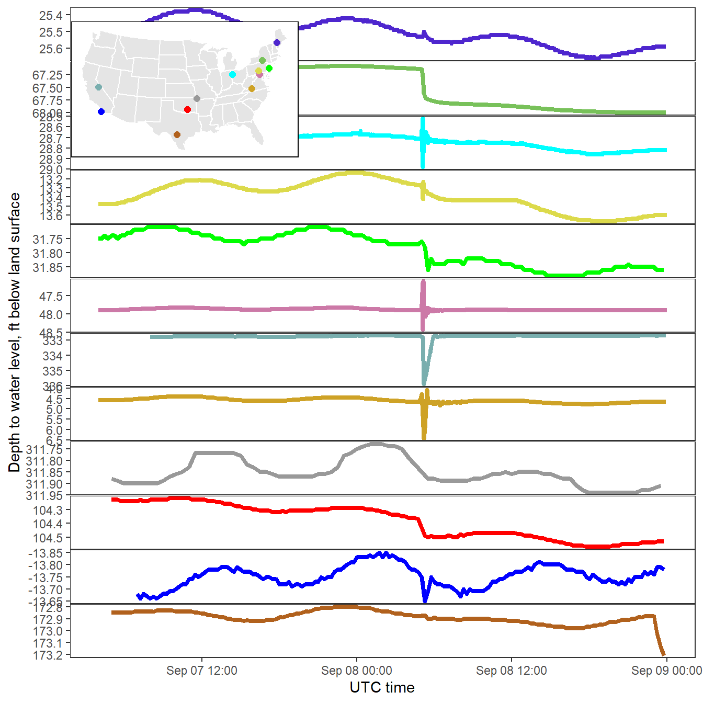

earthquake.RmdA magnitude 8.1 earthquake was measured in the Pacific region offshore Chiapas, Mexico at 04:49:21 UTC on September 8th 2017.
Working in the Water Mission Area for the USGS, our Data Science Team was already hard at work polishing up water visualizations for the devastating Hurricane Harvey, as well as creating a new visualization for Hurricane Irma. That is to say, the resources available for a timely visualization were already spent.
By 10 am on Friday however, a team of USGS groundwater scientist had realized that the affects of the earthquake were being observed in groundwater water level measurements across the United States, and were collecting a list of sites that clearly showed the phenomena. It was interesting to view the data directly from the National Water Information System NWIS pages.
While the NWIS site allowed a very easy way to observe the data, it was not quite as dramatic and interesting since it was only plotted in local time zones (so the earthquake peaks were not lining up), and the y-axis scales were so different, they could not be plotted on a single graph:
The challenge was on: could we very quickly get a graph out that aggregates this data, unifies the time zones, and visualize the information in an intuitive way for the general population? This blog documents the process of rapidly creating the plot in order to get the information out to social media in a timely manner. The final plot could certainly be improved, but with the limited resources and time constraints, it still managed to be a fun and interesting graphic.
Without question, the hardest part is to find the right data. Luckily for me, this was already done by 10am by the groundwater scientists Rodney A. Sheets, Charles Schalk, and Leonard Orzol (contact information is provided at the end of this post). They provided me with a list of unique site identification numbers from groundwater wells across the nation, and a “parameter code” that represents water levels measurements.
Using the dataRetrieval R package, it then becomes trivial to access USGS data and import it into the R environment.
The following code retrieves the data:
library(dataRetrieval)
sites <- c("402411077374801",
"364818094185302",
"405215084335400",
"370812080261901",
"393851077343001",
"444302070252401",
"324307117063502",
"421157075535401",
"373904118570701",
"343457096404501",
"401804074432601",
"292618099165901")
gw_data <- readNWISuv(sites,
parameterCd = "72019",
startDate = "2017-09-07",
endDate = "2017-09-08")By default, all the data in this data frame comes back in the “UTC” time zone. So, we’ve already crossed one of the hurdles - unifying time zones.
dataRetrieval attaches an attribute siteInfo to the returned data. The information in that attribute includes station names and location. We can extract that information and sort the sites from south to north using a bit of dplyr.
library(dplyr)
unique_sites <- attr(gw_data, "siteInfo")
south_to_north <- unique_sites %>%
arrange(desc(dec_lat_va))Now, we can do a bit of filtering so that we will only plot the 24 hours of on September 8th (UTC). Also, we can use the south_to_north data frame to create ordered levels for the sites:
Since the y-axis is quite different between sites, it seemed to make the most sense to use ggplot2’s faceting. The first iteration was as follows:
library(ggplot2)
depth_plot <- ggplot(data = gw_data_sub) +
geom_line(aes(x = dateTime, y = X_72019_00000)) +
theme_bw() +
scale_y_continuous(trans = "reverse") +
facet_grid(site_no ~ ., scales = "free") +
ylab(label = attr(gw_data, "variableInfo")$variableName) +
xlab(label = "UTC time") +
theme(strip.background = element_blank(),
strip.text.y = element_text(angle = 0),
panel.grid.major = element_blank(),
panel.grid.minor = element_blank())
depth_plotInitial plot of water levels
The site_no column (the unique site identification numbers) are not terribly useful for a general audience, so we decided to eliminate those facet labels on the right and add a map as a legend. Also, we wanted to use consistent colors across the map and lines.
So, first, let’s map some colors to the unique site_no:
The following code was used to map the sites to a basic lower-48 map of the United States:
library(maptools)
library(maps)
library(sp)
proj.string <- "+proj=laea +lat_0=45 +lon_0=-100 +x_0=0 +y_0=0 +a=6370997 +b=6370997 +units=m +no_defs"
to_sp <- function(...){
map <- maps::map(..., fill=TRUE, plot = FALSE)
IDs <- sapply(strsplit(map$names, ":"), function(x) x[1])
map.sp <- map2SpatialPolygons(map, IDs=IDs, proj4string=CRS("+proj=longlat +datum=WGS84"))
map.sp.t <- spTransform(map.sp, CRS(proj.string))
return(map.sp.t)
}
conus <- to_sp('state')
wgs84 <- "+init=epsg:4326"
sites_names <- select(unique_sites, dec_lon_va, dec_lat_va, site_no)
coordinates(sites_names) <- c(1,2)
proj4string(sites_names) <- CRS(wgs84)
sites_names = sites_names %>%
spTransform(CRS(proj4string(conus)))
sites_names.df <- as.data.frame(sites_names)
gsMap <- ggplot() +
geom_polygon(aes(x = long, y = lat, group = group),
data = conus, fill = "grey90",
color = "white")+
geom_point(data = sites_names.df,
aes(x = dec_lon_va, y=dec_lat_va, color = site_no),
size = 2) +
scale_color_manual(values = cbValues) +
theme_minimal() +
theme(panel.grid = element_blank(),
panel.background = element_rect(fill = 'white',
colour = 'black'),
axis.text = element_blank(),
axis.title = element_blank(),
panel.border = element_blank(),
legend.position="none")
gsMapSite locations on US map
The initial line graphs needed to be updated with those colors and dropping the facet labels:
depth_plot <- ggplot(data = gw_data_sub) +
geom_line(aes(x = dateTime, y = X_72019_00000,
color = site_no), size = 1.5) +
theme_bw() +
scale_y_continuous(trans = "reverse") +
facet_grid(site_no ~ ., scales = "free") +
ylab(label = attr(gw_data, "variableInfo")$variableName) +
xlab(label = "UTC time") +
scale_color_manual(values = cbValues) +
theme(strip.background = element_blank(),
strip.text = element_blank(),
panel.grid.major = element_blank(),
panel.grid.minor = element_blank(),
legend.position="none",
panel.spacing.y=unit(0.04, "lines"))Finally, the graphs were combined using the viewport function from the grid package:
library(grid)
vp <- viewport(width = 0.35, height = 0.22,
x = 0.26, y = 0.87)
print(depth_plot)
print(gsMap, vp = vp)
While this blog is primarily focused on the process used to create the plot, far more effort was expended by others in understanding and describing the data. The following information was released with the graph, initially as a Facebook post
Did you know? We often see a response to large (and sometimes not so large) earthquakes in groundwater levels in wells. The USGS maintains a network of wells for monitoring various things like natural variability in water levels and response to pumping and climate change across the U.S. The well network can be seen here: https://groundwaterwatch.usgs.gov/ The M8.1 earthquake that took place 9-8-2017 in the Pacific region offshore Chiapas, Mexico was observed across the U.S. in confined aquifer wells within the network. The wells in this plot are available from the National Water Information System (NWIS) web are from: TX, CA (southern), OK, MO, VA, CA (central), MD, NJ, PA, OH, NY and ME (from south to north). This is just a small sampling of the wells. USGS hydrologists are poring over the data from other states to see what the full extent of response might have been.
Read about how the 2011 earthquake in Mineral, VA affected ground water levels here: https://water.usgs.gov/ogw/eq/VAquake2011.html
Find more information about groundwater response to earthquakes. https://earthquake.usgs.gov/learn/topics/groundwater.php
The frequency of data in these plots varies – some are collected every minute, some every 15 minutes, and some hourly – depending upon the purpose of the monitoring, giving different responses to the earthquake. The magnitude of the response depends on the local geology and hydrology, when the data point was collected, and when the seismic wave hit the aquifer that the well penetrates.